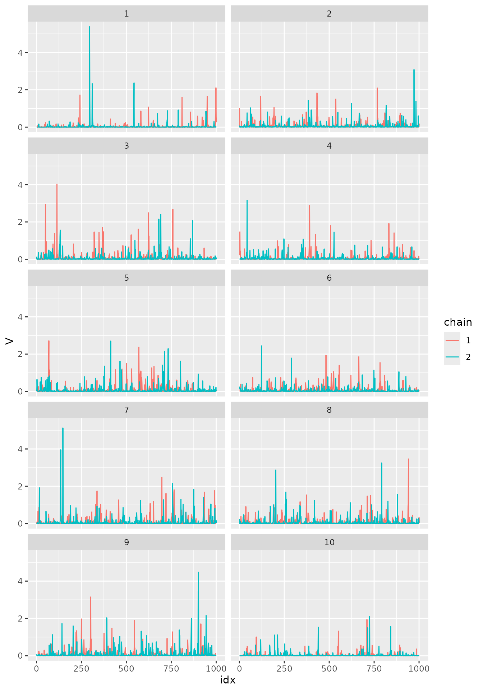
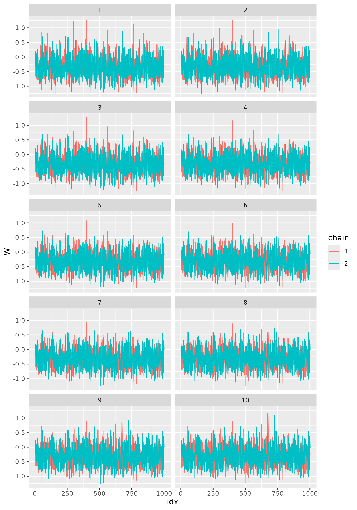
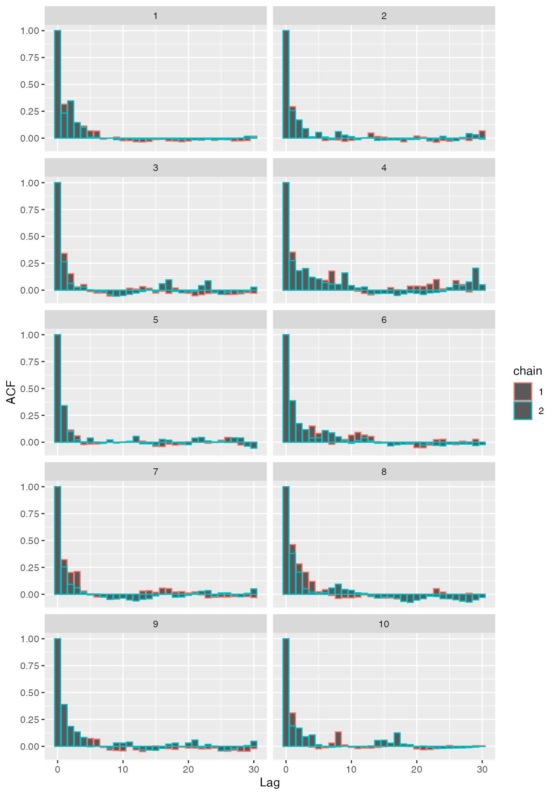
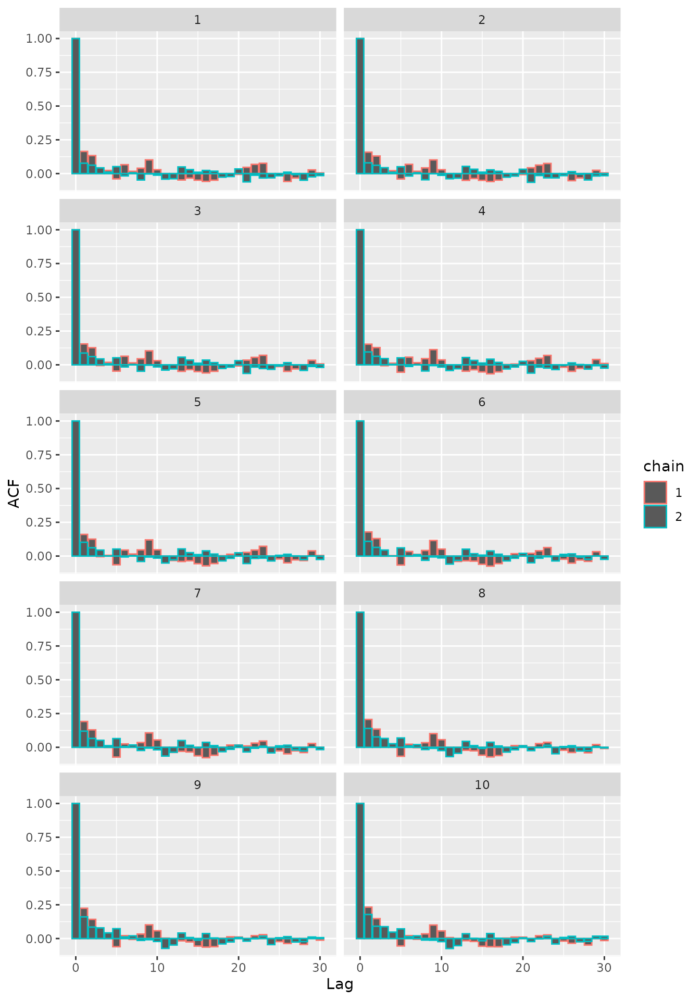
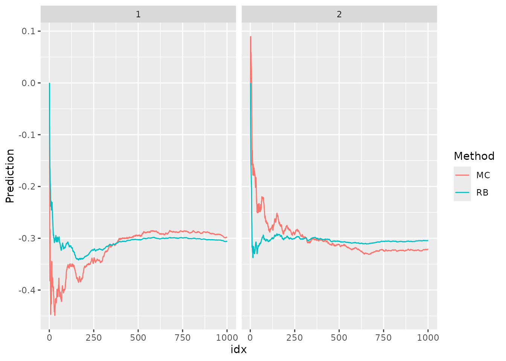

In this vignette, we provide a breif introduction to the estimation
methods in ngme2. First, we give a description of the
model.
A popular and flexible covariance function for random fields on is the Matérn covariance function: where is the Gamma function, is the modified Bessel function of the second kind, controls the correlation range and is the variance. Finally, determines the smoothness of the field.
It is well-known (Whittle, 1963) that a Gaussian process with Matérn covariance function solves the stochastic partial differential equation (SPDE) $$\begin{equation}\label{spde} (\kappa^2 -\Delta)^\beta u = \mathcal{W}\quad \hbox{in } \mathcal{D}, \end{equation}$$ where is the Laplacian operator, is the Gaussian spatial white noise on , and .
Inspired by this relation between Gaussian processes with Matérn covariance functions and solutions of the above SPDE, Lindgren et al. (2011) constructed computationally efficient Gaussian Markov random field approximations of , where the domain is bounded and .
In order to model departures from Gaussian behaviour we will consider the following extension due to Bolin (2014): where is a non-Gaussian white-noise. More specifically, we assume to be a type-G Lévy process.
We say that a Lévy process is of type G if its increments can be represented as location-scale mixtures: where and are parameters, and is independent of , and is a positive infinitely divisible random variable. In the SPDE we will assume and .
Finally, we assume we have observations , observed at locations , where satisfy where are i.i.d. following .
In this vignette we will assume basic understanding of Galerkin’s finite element method. For further details we refer the reader to the Sampling from processes given by solutions of SPDEs driven by non-Gaussian noise vignette.
Recall that we are assuming , so our SPDE is given by
Let us introduce some notation regarding the finite element method (FEM). Let $V_n = {\rm span}\{\varphi_1,\ldots,\varphi_n\}$, where are piecewise linear basis functions obtained from a triangulation of .
An approximate solution of is written in terms of the finite element basis functions as where are the FEM weights. Let, also, Therefore, given a vector of independent stochastic variances (in our case, positive infinitely divisible random variables), we obtain that $$\mathbf{f}|\mathbf{V} \sim N(\gamma + \mu\mathbf{V}, \sigma^2{\rm diag}(\mathbf{V})).$$
Let us now introduce some useful notation. Let be the matrix with th entry given by The matrix is known as the mass matrix in FEM theory. Let, also, be the matrix with th entry given by The matrix is known in FEM theory as stiffness matrix. Finally, let Recall that . is chosen such that to ensure parameter identifiability. Then, we have that the FEM weights satisfy $$\mathbf{w}|\mathbf{V} \sim N(\mathbf{K}^{-1}(-\mu \mathbf{h}+\mu\mathbf{V}), \sigma^2\mathbf{K}^{-1}{\rm diag}(\mathbf{V})\mathbf{K}^{-1}),$$ where is the discretization of the differential operator and .
In order to illustrate predictions we will assume that the parameters , and are known. The case of unknown parameters will be treated in the next section.
Our goal in this section is to perform prediction of the latent field at locations where there are no observations. Usually, when doing such predictions, one provides mean and variance of the predictive distribution. We will now describe how one can generate these quantities when assuming the model defined in the previous sections.
Let us assume we want to obtain predictions at locations , where .
Notice that for , Therefore, if we let be the matrix whose th entry is given by , then Thus, to perform prediction the desired means and variances are $$E[\mathbf{A}_p \mathbf{w} | \mathbf{Y}]\quad\hbox{and}\quad V[\mathbf{A}_p\mathbf{w}|\mathbf{Y}],$$ where
Now, observe that the density of is not known. So, the mean and variance cannot be computed analytically.
There are two ways to circumvent that situation. Both of them are based on the fact that even though we do not know the density of , we do know the density of and the density of . Therefore we can use a Gibbs sampler to sample from . From this we obtain, as a byproduct, marginal samples from and .
We will now provide a brief presentation of the Gibbs sampler and then we will provide the approximations of the means and variances.
We will now briefly describe the Gibbs sampler algorithm that will be used here.
Let be the matrix, whose th entry is given by . Therefore, we have that so that where . We will consider the above representation, i.e., we will assume that and that any error from the approximation of by is captured by the measurement noise.
Therefore, under this assumption we have that Also recall that $$\mathbf{w}|\mathbf{V} \sim N(\mathbf{K}^{-1}(-\mu \mathbf{h}+\mu\mathbf{V}), \sigma^2\mathbf{K}^{-1}{\rm diag}(\mathbf{V})\mathbf{K}^{-1}).$$ Let $$\mathbf{m} = \mathbf{K}^{-1}(-\mu \mathbf{h}+\mu\mathbf{V})\quad \hbox{and}\quad \mathbf{Q} = \frac{1}{\sigma^2}\mathbf{K}{\rm diag}(\mathbf{V})^{-1}\mathbf{K}.$$
It thus follows (see, also, Wallin and Bolin (2015) or Asar et al. (2020)) that where $$\widetilde{\mathbf{Q}} = \mathbf{Q} + \sigma_\varepsilon^{-2} \mathbf{A}^\top\mathbf{A}\quad\hbox{and}\quad \widetilde{\mathbf{m}} = \widetilde{\mathbf{Q}}^{-1}\big(\mathbf{Q}\mathbf{m}+\sigma_\varepsilon^{-2}\mathbf{A}^\top\mathbf{Y}\big).$$
To compute the conditional distribution one can see from Wallin and Bolin (2015), pp. 879, that are conditionally independent given . Furthermore, we also have from Proposition 1 from Asar et al. (2020)) that if , where stands for the generalized inverse Gaussian distribution with parameters and , then, for every ,
We are now in a position to use the Gibbs sampling algorithm:
One should stop when equilibrium is reached. To obtain evidence that equilibrium has been achieved, it is best to consider more than one chain, starting from different locations, and see if they mixed well. It might also be useful to see autocorrelation plots.
Depending on the starting values, one might consider to do burn-in samples, that is, one runs a chain for some iterations, then saves the last position, throw away the rest of the samples, and use that as starting values.
It is important to observe that the samples will not be independent. However, under very general assumptions, the Gibbs sampler provides samples satisfying the law of large numbers for functionals of the sample. Therefore, one can use these samples to compute means and variances.
Suppose we have a sample and then approximate the mean as and to approximate the variance as where is a sample generated using the Gibbs sampler algorithm.
The second way consists in performing a Rao-Blackwellization (Robert and Casella, 2004) for the means and variances. By following Wallin and Bolin (2015) we have that where , and its expression was given in the description of the Gibbs sampler.
Thus, we have the approximation where , that is, was computed based on .
Notice, also, that has been computed during the Gibbs sampling, so it does not imply on additional cost.
By a similar reasoning we have that where is the conditional covariance matrix of , given and , evaluated at .
For this example we will consider the latent process solving the equation where is a NIG-distributed white-noise. For more details on the NIG distribution as well as on how to sample from such a process we refer the reader to Sampling from processes given by solutions of SPDEs driven by non-Gaussian noise vignette. We will also be using the notation from that vignette.
Notice that we will, then, be assuming to follow an inverse Gaussian distribution with parameters and .
We will take , , , , and . We will also assume that we have 10 observations where . Notice that .
Let us now build the matrix , generate and then sample from the NIG model:
We will consider a mesh with 10 equally spaced nodes. The code to sample for such a process is given below.
library(fmesher)
library(ngme2)
library(ggplot2)
library(tidyr)
library(Matrix)
set.seed(123)
loc_1d <- 0:9/9
mesh_1d <- fm_mesh_1d(loc_1d)
# inla.mesh.fem
# inla.mesh.1d.fem(mesh_1d)$c1 + inla.mesh.1d.fem(mesh_1d)$g1
# attr(simulate(noise_nig(n=10, 1,1,0.5), seed=10), "noise")$h
# specify the model we use
mu <- 1; sigma <- 1; nu <- 0.5
spde_1d <- ngme2::f(
loc_1d,
model = "matern",
theta_K = log(1),
mesh = mesh_1d,
noise = noise_nig(mu=mu, sigma=sigma, nu=nu)
)
K <- spde_1d$operator$K
W <- simulate(spde_1d, seed = 10)[[1]]
plot(loc_1d, W, type = "l")
str(W)
#> num [1:10] 0.03 0.048 0.0594 0.0722 0.045 ...
V <- attr(W, "noise")$V
plot(loc_1d, V, type = "l")We will now generate 9 uniformly distributed random locations to determine the locations of the observations. Once we determine the locations we will need to build the matrix to obtain the values of the process at those locations. We can build the matrix by using the function fm_basis.
new_loc_1d <- sort(runif(9))
A_matrix <- fmesher::fm_basis(
mesh = fm_mesh_1d(loc_1d),
loc = new_loc_1d
)
A_matrix
#> 9 x 10 sparse Matrix of class "dgCMatrix"
#>
#> [1,] . . . 0.8416668 0.1583332 . . . . .
#> [2,] . . . 0.5365185 0.4634815 . . . . .
#> [3,] . . . 0.2234306 0.7765694 . . . . .
#> [4,] . . . . 0.2899858 0.7100142 . . . .
#> [5,] . . . . . 0.4407827 0.5592173 . . .
#> [6,] . . . . . 0.4294092 0.5705908 . . .
#> [7,] . . . . . . 0.8148042 0.1851958 . .
#> [8,] . . . . . . 0.7875746 0.2124254 . .
#> [9,] . . . . . . 0.2507151 0.7492849 . .
sigma_eps = 1
Y <- A_matrix %*% W + sigma_eps * rnorm(9)
plot(new_loc_1d, Y, type="h")
abline(0,0)Now, let us assume we want to obtain prediction for at the point . To this end we will obtain predictions using both methods, namely, the standard MC and the Rao-Blackwellization.
For both of these methods we need Gibbs samples, so let us build Gibbs samples. We will build 2 chains with different starting values and no burn-in samples.
# First step - Starting values for V
# Considering a sample of inv-Gaussian as starting values for both chains
h_nig_1d <- spde_1d$operator$h
V_1 <- matrix(ngme2::rig(10, nu, nu*h_nig_1d^2, seed = 1), nrow = 1)
V_2 <- matrix(ngme2::rig(10, nu, nu*h_nig_1d^2, seed = 2), nrow = 1)Recall that , and , so that and $$\mathbf{w} | \mathbf{V}, \mathbf{Y} \sim N\big( (\mathbf{K}{\rm diag}(\mathbf{V})^{-1}\mathbf{K} + \mathbf{A}^\top\mathbf{A})^{-1}(\mathbf{K}{\rm diag}(\mathbf{V})^{-1}(\mathbf{V}-\mathbf{h})+\mathbf{A}^\top \mathbf{Y}), (\mathbf{K}{\rm diag}(\mathbf{V})^{-1}\mathbf{K} + \mathbf{A}^\top\mathbf{A})^{-1}\big).$$
Let us sample 1000 times for each chain. Let us also record the values of during the sampling.
W_1 <- matrix(0, nrow=1, ncol=10)
W_2 <- matrix(0, nrow=1, ncol=10)
N_sim = 1000
# Vector of conditional means E[w|V,Y]
m_W_1 <- matrix(0, nrow=1, ncol=10)
m_W_2 <- matrix(0, nrow=1, ncol=10)
# Recall that sigma_eps = 1
Asq <- t(A_matrix)%*%A_matrix / sigma_eps^2
# Recall that mu = 1 and sigma = 1
# Gibbs sampling
for(i in 1:N_sim){
Q_1 <- K%*%diag(1/V_1[i,])%*%K/sigma^2
Q_2 <- K%*%diag(1/V_2[i,])%*%K/sigma^2
resp_1 <- Q_1%*%solve(K,(-h_nig_1d + V_1[i,])*mu) + t(A_matrix)%*%Y/sigma_eps^2
resp_2 <- Q_2%*%solve(K,(-h_nig_1d + V_2[i,])*mu) + t(A_matrix)%*%Y/sigma_eps^2
m_W_1 <- rbind(m_W_1, t(solve(Q_1 + Asq, resp_1)))
m_W_2 <- rbind(m_W_2, t(solve(Q_2 + Asq, resp_2)))
Chol_1 <- chol(Q_1 + Asq)
Chol_2 <- chol(Q_2 + Asq)
W_1 <- rbind(W_1, m_W_1[i+1,] + t(solve(Chol_1, rnorm(10))))
W_2 <- rbind(W_2, m_W_2[i+1,] + t(solve(Chol_2, rnorm(10))))
V_1 <- rbind(V_1, ngme2::rgig(10,
-1,
nu + (mu/sigma)^2,
nu*h_nig_1d^2 + as.vector((K%*%W_1[i+1,] +h_nig_1d)^2)/sigma^2))
V_2 <- rbind(V_2, ngme2::rgig(10,
-1,
nu + (mu/sigma)^2,
nu*h_nig_1d^2 + as.vector((K%*%W_2[i+1,] +h_nig_1d)^2)/sigma^2))
}Let us organize the data to build traceplots.
df_V <- data.frame(V = V_1[,1], chain = "1", coord = 1, idx = 1:(N_sim+1))
temp <- data.frame(V = V_2[,1], chain = "2", coord = 1, idx = 1:(N_sim+1))
df_V <- rbind(df_V, temp)
for(i in 2:10){
temp_1 <- data.frame(V = V_1[,i], chain = "1", coord = i, idx = 1:(N_sim+1))
temp_2 <- data.frame(V = V_2[,i], chain = "2", coord = i, idx = 1:(N_sim+1))
df_V <- rbind(df_V, temp_1, temp_2)
}
df_W <- data.frame(W = W_1[,1], chain = "1", coord = 1, idx = 1:(N_sim+1))
temp <- data.frame(W = W_2[,1], chain = "2", coord = 1, idx = 1:(N_sim+1))
df_W <- rbind(df_W, temp)
for(i in 2:10){
temp_1 <- data.frame(W = W_1[,i], chain = "1", coord = i, idx = 1:(N_sim+1))
temp_2 <- data.frame(W = W_2[,i], chain = "2", coord = i, idx = 1:(N_sim+1))
df_W <- rbind(df_W, temp_1, temp_2)
}Let us compare the posterior means:
V
#> NULL
colMeans(V_1)
#> [1] 0.03929056 0.05362881 0.06984939 0.06864009 0.05893913 0.05902067
#> [7] 0.08369887 0.06977164 0.07249952 0.03197551
colMeans(V_2)
#> [1] 0.02873798 0.05072090 0.07698597 0.06319573 0.06190900 0.05799710
#> [7] 0.06149308 0.07669895 0.07509506 0.03456554
as.vector(W)
#> [1] 0.029985516 0.048025393 0.059415769 0.072248733 0.045016944
#> [6] 0.030076087 0.011708335 0.005539407 -0.012462080 -0.016644480
colMeans(W_1)
#> [1] -0.3138333 -0.3140947 -0.3109392 -0.3068376 -0.3016274 -0.2956960
#> [7] -0.2900838 -0.2877050 -0.2854362 -0.2852868
colMeans(W_2)
#> [1] -0.3414865 -0.3401825 -0.3354632 -0.3303111 -0.3242625 -0.3178778
#> [7] -0.3115189 -0.3049103 -0.3012126 -0.2997106Let us begin by building traceplots for :
ggplot(df_V, aes(x = idx, y = V, col = chain)) +
geom_line() + facet_wrap(~ coord, ncol=2)
and for :
ggplot(df_W, aes(x = idx, y = W, col = chain)) +
geom_line() + facet_wrap(~ coord, ncol=2)
The traceplots appear to be healthy, not being stuck anywhere and the chain apparently mixed well.
We can also build autocorrelation plots. To such an end let us prepare the data frames.
acf_V <- as.vector(acf(V_1[,1], plot=FALSE)$acf)
df_V_acf <- data.frame(acf = acf_V,
chain = "1", coord = 1, lag = 0:(length(acf_V)-1))
acf_V <- as.vector(acf(V_2[,1], plot=FALSE)$acf)
temp <- data.frame(acf = as.vector(acf(V_2[,1], plot=FALSE)$acf),
chain = "2", coord = 1, lag = 0:(length(acf_V)-1))
df_V_acf <- rbind(df_V_acf, temp)
for(i in 2:10){
acf_V <- as.vector(acf(V_1[,i], plot=FALSE)$acf)
temp_1 <- data.frame(acf = acf_V,
chain = "1", coord = i, lag = 0:(length(acf_V)-1))
acf_V <- as.vector(acf(V_2[,i], plot=FALSE)$acf)
temp_2 <- data.frame(acf = acf_V,
chain = "2", coord = i, lag = 0:(length(acf_V)-1))
df_V_acf <- rbind(df_V_acf, temp_1, temp_2)
}
acf_W <- as.vector(acf(W_1[,1], plot=FALSE)$acf)
df_W_acf <- data.frame(acf = acf_W,
chain = "1", coord = 1, lag = 0:(length(acf_W)-1))
acf_W <- as.vector(acf(W_2[,1], plot=FALSE)$acf)
temp <- data.frame(acf = acf_W, chain = "2",
coord = 1, lag = 0:(length(acf_W)-1))
df_W_acf <- rbind(df_W_acf, temp)
for(i in 2:10){
acf_W <- as.vector(acf(W_1[,i], plot=FALSE)$acf)
temp_1 <- data.frame(acf = acf_W,
chain = "1", coord = i, lag = 0:(length(acf_W)-1))
acf_W <- as.vector(acf(W_2[,i], plot=FALSE)$acf)
temp_2 <- data.frame(acf = acf_W,
chain = "2",
coord = i, lag = 0:(length(acf_W)-1))
df_W_acf <- rbind(df_W_acf, temp_1, temp_2)
}Now, let us plot the autocorrelation plots for :
ggplot(df_V_acf, aes(x=lag,y=acf, col=chain)) +
geom_bar(stat = "identity", position = "identity") +
xlab('Lag') + ylab('ACF') + facet_wrap(~coord, ncol=2)
Now, the autocorrelation plots for :
ggplot(df_W_acf, aes(x=lag,y=acf, col=chain)) +
geom_bar(stat = "identity", position = "identity") +
xlab('Lag') + ylab('ACF') + facet_wrap(~coord, ncol=2)
We can see that the correlation is very low.
We will now move forward to obtain the predictions at . We will compute MC and Rao-Blackwellization for the predictions.
# Computing A matrix at t^\ast
A_pred <- fm_basis(mesh = mesh_1d, loc = 5/9)
# MC_estimate:
AW_1 <- A_pred%*%t(W_1)
MC_pred_1 <- cumsum(AW_1)/(1:length(AW_1))
RB_1 <- A_pred%*%t(m_W_1)
RB_pred_1 <- cumsum(RB_1)/(1:length(AW_1))
df_pred <- data.frame(idx = 1:length(AW_1), MC = MC_pred_1,
RB = RB_pred_1, chain = "1")
AW_2 <- A_pred%*%t(W_2)
MC_pred_2 <- cumsum(AW_2)/(1:length(AW_2))
RB_2 <- A_pred%*%t(m_W_2)
RB_pred_2 <- cumsum(RB_2)/(1:length(AW_2))
temp <- data.frame(idx = 1:length(AW_2), MC = MC_pred_2,
RB = RB_pred_2, chain = "2")
df_pred <- rbind(df_pred, temp)
df_pred <- tidyr::pivot_longer(df_pred,
cols = c("MC", "RB"),
names_to = "Method",
values_to = "Prediction")
ggplot(df_pred, aes(x = idx, y = Prediction, col=Method)) +
facet_wrap(~chain) + geom_line()
We notice that the Rao-Blackwellization approach converges much faster than the standard MC approach.
In ngme2, we employ the maximum likelihood estimation
and stochastic gradient descent method to estimate the parameters.
For maximum likelihood estimation the goal is to minimize , where is the log-likelihood function of .
For non-Gaussian models there is an additional complication that the log-likelihood function is not known in explicit form. A way to solve this problem is to use Fisher’s identity (Fisher, 1925). See also Douc et al. (2014) for further details.
Let be a sequence of observed random variables with latent variables , being a random variable in . Assume that the joint distribution of and is parameterized by some , where and . Assume that the complete log-likelihood (with respect to some reference -finite measure) is differentiable with respect to and are regular, in the sense that one may differentiate through the integral sign. Then, the marginal log-likelihood with respect to satisfies
In our context, we assume and to be hidden. Therefore, we may use Fisher’s identity above to the latent variable to obtain that Thus, the idea here is to use both samples of and obtained from the Gibbs sampler to approximate the gradient as
To this end, we will compute the gradients .
We have that $$\mathbf{w}|\mathbf{V} \sim N(\mathbf{K}^{-1}(-\mu \mathbf{h}+\mu\mathbf{V}), \mathbf{K}^{-1}{\rm diag}(\mathbf{V})\mathbf{K}^{-1})$$ and follows a GIG distribution such that for every , .
Therefore, we have that $$\begin{array}{ccl} L((\mu,\sigma_\varepsilon); \mathbf{w}, \mathbf{V},\mathbf{Y}) &=& -n\log(\sigma_\varepsilon)-0.5\sigma_\varepsilon^{-2} (\mathbf{Y} - \mathbf{A}\mathbf{K}^{-1}(-\mu \mathbf{h}+\mu\mathbf{V}))\\ &-&0.5\sigma_\varepsilon^{-2}(\mathbf{A}(\mathbf{w}-\mathbf{m})^\top{\rm diag} (1/V_i) (\mathbf{Y} - \mathbf{A}\mathbf{K}^{-1}(-\mu \mathbf{h}+\mu\mathbf{V})-\mathbf{A}(\mathbf{w}-\mathbf{m})) + const, \end{array}$$ where does not depend on . Thus, we have that $$\nabla_\mu L((\mu,\sigma_\varepsilon); \mathbf{w}, \mathbf{V},\mathbf{Y}) = \sigma_\varepsilon^{-2}\mathbf{A}\mathbf{K}^{-1}(-\mathbf{h}+\mathbf{V}) {\rm diag} (1/V_i)(\mathbf{Y} - \mathbf{A}\mathbf{K}^{-1}(-\mu \mathbf{h}+\mu\mathbf{V}) - \mathbf{A}(\mathbf{w}-\mathbf{m})).$$ Now, with respect to we have that $$\nabla_{\sigma_\varepsilon} L((\mu,\sigma_\varepsilon); \mathbf{w}, \mathbf{V},\mathbf{Y}) = -\frac{n}{\sigma_\varepsilon} + \frac{1}{\sigma_\varepsilon^3} (\mathbf{Y} - \mathbf{A}\mathbf{K}^{-1}(-\mu \mathbf{h}+\mu\mathbf{V})-\mathbf{A}(\mathbf{w}-\mathbf{m}))^\top{\rm diag} (1/V_i) (\mathbf{Y} - \mathbf{A}\mathbf{K}^{-1}(-\mu \mathbf{h}+\mu\mathbf{V})-\mathbf{A}(\mathbf{w}-\mathbf{m}))$$ By proceeding analogously, we obtain that the gradient with respect to is given by $$\nabla_{\kappa^2} L(\kappa^2; \mathbf{Y}, \mathbf{w}, \mathbf{V}) = tr(\mathbf{C}\mathbf{K}^{-1})- \mathbf{w}^\top \mathbf{C}^\top{\rm diag} (1/V_i)(\mathbf{K}\mathbf{w}+(\mathbf{h}-\mathbf{V})\mu).$$ Finally, for the gradient of the parameter of the distribution of , we use the Rao-Blackwellized version, see the next subsection.
Now, observe that we can compute the log-likelihood . Indeed, we apply Fisher’s identity again to find that So, with the above gradients, we can approximate the gradient by taking the mean over the samples of obtained by the Gibbs sampling:
Let us now compute the gradients . We begin by computing . To this end, we use the expression for given in the previous subsection together with , to conclude that $$\nabla_\mu L((\mu,\sigma_\varepsilon); \mathbf{V},\mathbf{Y}) = \sigma_\varepsilon^{-2}\mathbf{A}\mathbf{K}^{-1}(-\mathbf{h}+\mathbf{V}) {\rm diag} (1/V_i)(\mathbf{Y} - \mathbf{A}\mathbf{K}^{-1}(-\mu \mathbf{h}+\mu\mathbf{V}) - \mathbf{A}(\widetilde{\mathbf{m}}-\mathbf{m}))$$ Analogously, we also obtain that $$\nabla_{\sigma_\varepsilon} L((\mu,\sigma_\varepsilon); \mathbf{V},\mathbf{Y}) = -\frac{n}{\sigma_\varepsilon} + \frac{1}{\sigma_\varepsilon^3} (\mathbf{Y} - \mathbf{A}\mathbf{K}^{-1}(-\mu \mathbf{h}+\mu\mathbf{V})-\mathbf{A}(\widetilde{\mathbf{m}}-\mathbf{m}))^\top{\rm diag} (1/V_i) (\mathbf{Y} - \mathbf{A}\mathbf{K}^{-1}(-\mu \mathbf{h}+\mu\mathbf{V})-\mathbf{A}(\widetilde{\mathbf{m}}-\mathbf{m})).$$
Now, notice that $$\nabla_{\kappa^2} L(\kappa^2; \mathbf{Y}, \mathbf{w}, \mathbf{V}) = tr(\mathbf{C}\mathbf{K}^{-1})- \mathbf{w}^\top \mathbf{C}^\top{\rm diag} (1/V_i)\mathbf{K}\mathbf{w}-\mathbf{w}^\top \mathbf{C}^\top{\rm diag} (1/V_i)(\mathbf{h}-\mathbf{V})\mu,$$ that and that $$E[\mathbf{w}^\top \mathbf{C}^\top{\rm diag} (1/V_i)\mathbf{K}\mathbf{w}|\mathbf{V},\mathbf{Y}] = tr(\mathbf{C}^\top{\rm diag} (1/V_i)\mathbf{K}\widetilde{\mathbf{Q}}^{-1}) + \widetilde{\mathbf{m}}^\top\mathbf{C}^\top{\rm diag} (1/V_i)\mathbf{K}\widetilde{\mathbf{m}}$$ to conclude that $$\nabla_{\kappa^2} L(\kappa^2; \mathbf{Y}, \mathbf{V}) = tr(\mathbf{C}\mathbf{K}^{-1})- tr(\mathbf{C}^\top{\rm diag} (1/V_i)\mathbf{K}\widetilde{\mathbf{Q}}^{-1}) - \widetilde{\mathbf{m}}^\top\mathbf{C}^\top{\rm diag} (1/V_i)\mathbf{K}\widetilde{\mathbf{m}}-\widetilde{\mathbf{m}}^\top \mathbf{C}^\top{\rm diag} (1/V_i)(\mathbf{h}-\mathbf{V})\mu.$$
Finally, the gradient for the parameter of the distribution of depends on the distribution of . To illustrate we will present the gradient with respect to the parameter when follows inverse-Gaussian distribution, which is the situation in which we have NIG noise.
For this case we have that
On the gradients and , we can see the traces and $tr(\mathbf{C}^\top{\rm diag} (1/V_i)\mathbf{K}\widetilde{\mathbf{Q}}^{-1})$. These traces contain the inverses and .
There are efficient alternatives to handling these traces. For instance, if we want to compute , is symmetric, and the sparsity of is the same as the sparsity of , we only need to compute the elements of for the coordinates with non-zero entries. This is what happens, for instance, in . So, to compute this trace there is this efficient alternative. It is implemented in the ngme package.
Lindgren, F., Rue, H., and Lindstrom, J. (2011). An explicit link between Gaussian fields and Gaussian Markov random fields: the stochastic partial differential equation approach. Journal of the Royal Statistical Society: Series B (Statistical Methodology), 73(4):423–498.
Robert, C., G. Casella (2004). Monte Carlo statistical methods, Springer Texts in Statistics, Springer, New York, USA.
Wallin, J., Bollin, D. (2015). Geostatistical Modelling Using Non-Gaussian Matérn Fields. Scandinavian Journal of Statistics. 42(3):872-890.
Whittle, P. (1963). Stochastic-processes in several dimensions. Bulletin of the International Statistical Institute, 40(2):974–994.